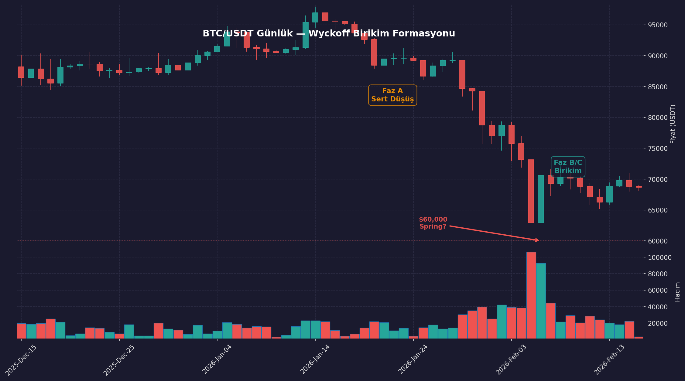
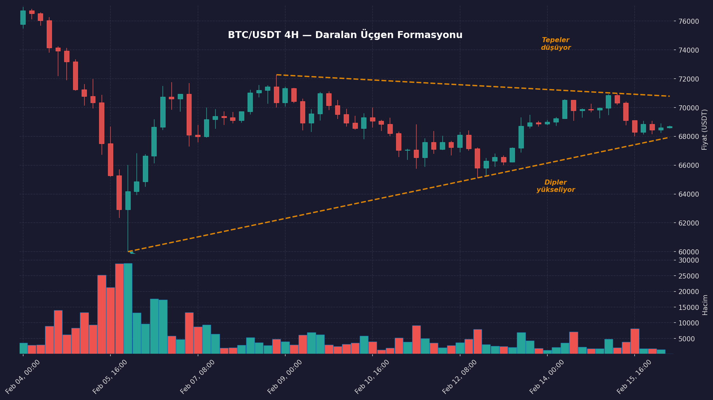

Bitcoin Neden Düşüyor? Wyckoff Modeli ve Whale Alımları
🇹🇷 Turkish Content: This article is written in Turkish. The cultural and emotional nuances cannot be properly translated, so it remains in its original language.
Bitcoin $98k'dan $60k'ya haftalar içinde düştü. Piyasada korku hakim — korku endeksi 100 üzerinden 8'e düştü — ve küçük yatırımcılar zararına satıyor.
Bu makaledeki tez şu: bu düşüş, klasik bir Wyckoff birikim süreci olabilir — yani büyük oyuncular fiyatı düşürüp ucuzdan topluyor olabilir.
Bu iddiayı Wyckoff modeli, zincir üstü veriler, hacim davranışı ve piyasa psikolojisi üzerinden analiz edeceğim. Ayrıca neden tamamen yanlış olabileceğimi de açıklayacağım.
Bitcoin Düşüşü Wyckoff Birikim Modeline Uyuyor mu?
Bu tür fiyat davranışı yeni değil. Finansal piyasalarda, büyük oyuncuların nasıl birikim yaptığına dair iyi belgelenmiş bir model var.
Richard Wyckoff'un birikim modeli, büyük oyuncuların piyasayı beş aşamada nasıl manipüle ettiğini tanımlar:
Faz A — Sert Düşüş: Fiyat hızla çöker, taban seviyesi oluşur. Herkes "bitti" der. → $98k'dan $60k'ya çöküş. Bu aşama tamamlanmış görünüyor.
Faz B — Sessiz Birikim: Fiyat yatay gider. Medyada korku pompalanır, küçük yatırımcı panikle satar. Bu sırada büyük oyuncular sessizce toplar. → Şu an burada gibiyiz. Aşağıda kanıtlarını göstereceğim.
Faz C — Son Dalış (Spring): Fiyat bir kez daha desteğin altına iner. Amaç, yatırımcıların zarar-kes (stop-loss) emirlerini tetikleyip son kalan iyimserleri de kırmak. → Kritik soru: 6 Şubat'taki $60k bu dalış mıydı, yoksa $53-55k hâlâ kapıda mı?
Faz D — Yükseliş Başlangıcı: Artan hacimle yukarı kırılım.
Faz E — Yeni yükseliş trendi.
Bu modelin mevcut Bitcoin düşüşüne neden uyduğunu düşündüğümü göstermek için önce ne olduğuna, sonra kanıtlara bakalım.

Kronoloji: Ne Oldu?
Trump, 2024'te Nashville Bitcoin Konferansı'nda ABD'yi "dünyanın kripto başkenti" yapacağını söyledi. Mart 2025'te Stratejik Bitcoin Rezervi kararnamesini imzaladı — hükümetin 207,000 BTC'sinin satılmaması ve ek alım stratejisi araştırılması emrediliyor. BITCOIN Yasası (S.954) tasarısı da 5 yılda 1 milyon BTC alınmasını öngörüyor. Tasarı Kongre'den geçmedi ama politik irade net.
Ama tam bu sırada fiyatı aşağı çekecek olaylar zinciri başladı. Ocak 2026 sonunda Trump, Grönland meselesi yüzünden 8 Avrupa ülkesine %25 gümrük vergisi tehdidinde bulundu. Borsalar sarsıldı, BTC peşinden geriledi — 24 saatte $875M likide edildi. 1 Şubat'ta Kanada, Meksika ve Çin'e ek vergiler yürürlüğe girdi. 3-5 Şubat'ta Michael Burry "$50k'lara gider" dedi, Richard Farr hedef fiyat $0 verdi. 5 Şubat'ta Microsoft bilançosu teknoloji hisselerini çekti — BTC tek günde $73k'dan $62k'ya düştü.
6 Şubat'ta fiyat tam $60,000'a dokundu ve 93,000+ kontrat hacimle $70.5k'ya fırladı. Sonraki hafta $66k'ya geriledi. Financial Times "Bitcoin'in değeri sıfır", Yahoo Finance "Bitcoin $0'a mı gidiyor?" dedi. 13-14 Şubat'ta $69.8k'ya toparlandı.
Bu Kronolojinin Önemi
Dikkat çeken nokta: BTC'yi stratejik rezerv yapacağını söyleyen adamın kendi gümrük politikaları piyasayı çökertiyor. Bu politikaların yan etkisi, almak istediğini söylediği varlığın fiyatını düşürmek oldu.
Bu olayların zamanlaması tesadüf olabilir. Ama Wyckoff modelinin fazlarına şaşırtıcı derecede uyuyor.
Bitcoin'in Wyckoff Birikiminde Olduğunu Gösteren 5 Kritik Sinyal
1. $60k'daki Hacim Patlaması
6 Şubat'ta BTC tam $60,000'a değdi ve 93,000+ kontrat hacimle döndü. Teknik analizde kullanılan Bollinger bandının (fiyatın istatistiksel olarak ne kadar "normal" aralıktan saptığını gösteren bir gösterge) alt sınırı ~$59.8k'daydı — yani fiyat "aşırı satım" bölgesine girmiş, istatistiksel olarak dönme ihtimali yüksek bir noktadaydı.
O seviyede biri çok ağır alım yaptı. Kim olduğunu bilmiyoruz. Ama psikolojik ve teknik açıdan bu kadar kritik bir noktadaki o hacim patlaması sıradan küçük yatırımcı davranışı değil.
2. Whale'ler Alıyor, Küçük Yatırımcılar Satıyor
Wyckoff birikiminin en klasik işareti: küçük yatırımcı panikle satarken büyük yatırımcılar (whale'ler — 1,000+ BTC tutan adresler) sessizce topluyor. Veriler tam bunu gösteriyor:
CoinDesk, Bloomberg ve yine CoinDesk Ocak-Şubat boyunca aynı tabloyu raporladı: küçük yatırımcılar çıkışa koşarken büyük cüzdanlar sessizce dipten topluyor. Sadece Ocak'ta whale adresler yaklaşık $7 milyar değerinde — 104,340 BTC — biriktirmiş. Michael Saylor da 15 Şubat'ta düşüşe rağmen agresif alım sinyali verdi.
Bu alımların büyük kısmı OTC masalarından (tezgah üstü piyasa — borsada görünmeyen, büyük alıcı ve satıcıların doğrudan işlem yaptığı kanallar) yapılıyor. Yani zincir üstü verilere bakıp "büyük alım yok" demek yanıltıcı olabilir.
3. Umut Rallisi Tuzağı: Piyasa Psikolojisi
Wyckoff birikiminin en kritik kısmı fiyat değil, yatırımcı psikolojisidir. Faz B'de amaç sadece ucuzdan toplamak değil — kalan iyimserleri de kırmaktır.
Bu aralıkta tekrar eden bir döngü var. Anlamak için iki terim:
- Long (uzun pozisyon): "Fiyat yükselecek" diye BTC alan kişi. Yükselirse kazanır, düşerse kaybeder.
- Short (kısa pozisyon): "Fiyat düşecek" diye BTC'yi ödünç alıp satan kişi. Düşerse kazanır, yükselirse kaybeder.
Döngü şöyle işliyor:
- Fiyat biraz yükselsin ($66k → $69k) — long'lara umut ver
- Tekrar aşağı çak — umudu ez
- Tekrarla, her sıçrama bir öncekinden düşük
- Sonunda long'lar pes edip kendileri short açsın
- Long/short oranı 1.0'ın altına düşsün — yani piyasadaki çoğunluk artık düşüş bekliyor olsun
- İşte o zaman gerçek dönüş gelir: herkes short açmışken fiyat aniden yükselir, short'lar zarar ettikçe pozisyonlarını kapatmak için BTC almak zorunda kalır, bu zorunlu alımlar fiyatı daha da yukarı iter — buna "short squeeze" denir
Şu an (16 Şubat) L/S oranı 1.82 — hâlâ %64.5 long. Çoğu trader hâlâ yükseliş bekliyor, yani teslim olma henüz tamamlanmadı. Bu döngü geçerliyse bir gerileme daha görebiliriz.
4. Medyada Koordineli Olumsuz Haber Akışı
Fiyat söylentilerdeki hükümet alım seviyesine çökerken, 10 günlük bir pencerede ABD medyası ve tanınmış analistler peş peşe "Bitcoin çöküyor" mesajı verdi. Michael Burry $50k'ları işaret etti, Pivotus Partners hedef fiyat olarak sıfır verdi, Financial Times "gerçek değeri sıfır" dedi. Yahoo Finance, MarketWatch ve Seeking Alpha bunları manşetten verdi.
En dikkat çekici olanı BlackRock: dünyanın en büyük varlık yöneticisi, kendi BTC ETF'ini tutarken aynı anda "BTC riskli" mesajı verdi. Kurumsal piyasalarda ne söylendiğinden çok ne yapıldığı önemlidir.
Bu kadar çok kaynağın, bu kadar kısa sürede, aynı mesajı vermesi tamamen organik mi, yoksa bir orkestrasyon mu?
5. Politik Bağlam: Trump'ın $60k Motivasyonu
Bu bölüm en spekülatif olanı. Devlet seviyesinde bir alıcı olduğuna dair doğrudan kanıt yok. Ancak politik teşviklerin varlığı, bu ihtimali teorik olarak mümkün kılıyor.
Trump kararname imzaladı, ek alım stratejisi aranıyor, politik irade ortada. 8-9 Şubat'ta Jim Cramer çıkıp "Trump'ın rezervi $60,000'dan dolduracağını duydum" dedi. Ve BTC tam $60,000'da devasa hacimle döndü.
Eğer hükümet gerçekten bu seviyeden almak istiyorsa, fiyatı oraya çekmek için motivasyonu var. Peki neden daha da aşağı çekmeleri gerekir?
Diyelim milyarlarca dolarlık BTC almak istiyorsunuz ve hedefiniz $60k ortalama. Ama bu miktarda alım yaptığınızda piyasadaki satış emirlerini tüketirsiniz — her yeni alım bir öncekinden daha pahalıya gelir. Buna "slippage" (kayma) denir. $60k'dan başlayıp alırsanız kendi alımınız fiyatı $70-80k'ya taşır, ortalama girişiniz hedefin çok üstünde kalır.
Çözüm: fiyatı hedefin altına çekmek. $53-55k'ya düşür, sonra agresif al. Kendi alımının yarattığı kayma ortalamayı ~$60k'ya çıkarır. Yani bu çöküş sadece uygun bir fırsat değil — hedef fiyattan birikim yapabilmek için gerekli olabilir.
Başka bir deyişle: büyük bir alıcı için düşüş bir sorun değil, bir stratejidir. Bu nedenle büyük kurumsal alımlar genellikle yükseliş sırasında değil, düşüş ve belirsizlik dönemlerinde gerçekleşir.
Neden Yanılıyor Olabilirim?
Dürüst olmak lazım — tamamen yanlış da çıkabilirim:
- Wyckoff bir yorumlama aracı, kehanet değil. Piyasa her zaman modele uymaz. Olmayan yerde formasyon görmek bilinen bir bilişsel tuzak.
- Zamanlaması tesadüf olabilir. Ayı piyasasında herkes zaten olumsuz konuşur — medyanın koordineli görünmesi için bilinçli bir orkestra şart değil.
- Hükümet alımı kanıtlanmadı. Kararname var ama aktif alım emri vermiyor, sadece strateji araştırılmasını istiyor. Yasa tasarısı Kongre'den geçmedi. Cramer'ın $60k iddiası bir söylenti. Zincir üstü verilerde devlet alımına dair kanıt yok.
- Makro riskler gerçek. Gümrük vergileri, enflasyon, faiz politikası — bunlar manipülasyon olmadan da BTC'yi çökertebilir.
İki Olası Senaryo
Senaryo A — $60k dönüş noktasıydı: 6 Şubat'taki 93K hacimli sıçrama son dalışı (Faz C) tamamladı. Fiyat üçgenin üstünü kırarsa yükseliş başlar.
Senaryo B — Son dalış henüz gelmedi: L/S oranı hâlâ yüksek, long'lar inatçı. $53-55k'ya bir gerileme daha gelecek, son iyimserler de kırılacak. Büyük alıcılar o seviyelerde toplar, kayma ortalamayı $60k'ya çeker, sonra yükseliş.
Ben Senaryo B'ye daha yakınım — çünkü piyasa psikolojisi henüz tam teslimiyet göstermiş görünmüyor. Ancak hacimli bir yukarı kırılım gelirse bu görüşümü yeniden değerlendiririm.
Bitcoin Fiyatında Dönüşü Gösterecek Kritik Sinyaller
Daralan üçgen — fiyat giderek daralan bir aralıkta sıkışıyor. Tepeler düşüyor ($70.5k → $70.3k → $69.8k), dipler yükseliyor ($60k → $65.1k → $65.8k). Yakında ya yukarı ya aşağı kırılacak.

L/S oranı — 1.82. Çoğunluk short'a dönene kadar (1.0 altı) gerçek dönüş beklemiyorum.
Kritik tarihler:
- 6 Mart — Tarım dışı istihdam (NFP): İstihdam verisi güçlü gelirse Fed "ekonomi iyi, faiz indirmeye gerek yok" der. Faiz yüksek kaldıkça yatırımcılar parasını risksiz tahvilde tutar, BTC gibi riskli varlıklardan uzak durur.
- 11 Mart — Enflasyon verisi (TÜFE): Yüksek gelirse Fed'in faiz indirmesi daha da zorlaşır, aynı etki.
- 18 Mart — Fed faiz kararı (FOMC): En büyük katalizör. Faiz inerse para riskli varlıklara akar ve BTC yükselir. İnmezse veya şahin bir mesaj gelirse gerileme devam eder.
Politik risk: Senatörler Trump bağlantılı World Liberty Financial'daki $500M BAE yatırımı için soruşturma istiyor. Yeni bir olumsuz haber dalgası yaratabilir — ya da hiçbir şey olmaz.
Bitcoin Düşüşü: Çöküş mü Yoksa Birikim mi?
Bitcoin'in düşmesinin ana nedeni, makro ekonomik belirsizlik, kaldıraçlı pozisyonların tasfiyesi ve büyük yatırımcıların birikim yapması olabilir. Wyckoff modeline göre bu tür sert düşüşler, yeni bir yükseliş trendinden önce görülebilir.
Wyckoff birikimi hipotezi, mevcut fiyat davranışı, zincir üstü veriler ve piyasa psikolojisi ile uyumlu görünüyor. Ancak bu kesin değil.
Gerçek olup olmadığını belirleyecek olan şey teori değil — önümüzdeki birkaç haftadaki fiyat davranışı olacaktır.